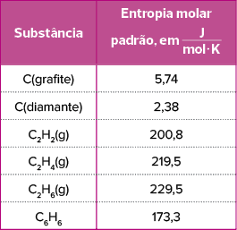

No laboratório de Química, podemos produzir muitos tipos de substâncias.
Motortion/iStockphoto.com
Se sabemos a fórmula da água, por que não a produzimos em laboratório?
Imagine se fosse possível acabar com toda a sede do mundo com o uso de um laboratório. A ideia é simples: sabendo a fórmula da água (H2O), cientistas fariam o líquido em ambiente controlado e ele seria distribuído ou vendido às regiões mais necessitadas.E
isso é, de fato, possível? Tecnicamente, sim. Mas os custos seriam tão altos, que dificilmente essa seria uma opção.Segundo o químico Fernando Galembeck, professor da Unicamp, a ciência sabe como pegar dois hidrogênios e uni-los
a um oxigênio para formar uma molécula de água. A técnica existe e é conhecida. O problema, entretanto, está no custo da operação. “É muito caro conseguir o hidrogênio, já que ele precisaria vir do petróleo.”Apesar de existir
na atmosfera, como o oxigênio, ele está presente em quantidade bem menor no ar. Portanto, a melhor maneira de conseguir hidrogênio é como derivado do refinamento do petróleo. Além disso, a reação de formação da molécula da
água é muito perigosa, já que existe liberação de energia. "Em grande quantidade, haveria uma liberação muito grande de energia. [A reação de formação da molécula] poderia ser explosiva”, comenta Amanda Pavão, diretora
de projetos da Química Jr. Unesp Araraquara.[...]
YARAK, Aretha.
UOL , 22 mar. 2017. Folhapress. Disponível em: <https://www.uol.com.br/tilt/ultimas-noticias/redacao/2017/03/22/se-sabemos-a-formula-da-agua-por-que-nao-a-produzimos-em-laboratorio.htm>. Acesso em: 17 nov. 2021.

Lei de Hess
No capítulo anterior, aprendemos a calcular a variação de entalpia de um fenômeno químico fazendo uso das entalpias de formação das substâncias e da equação ΔH = Hprodutos – Hreagentes. Neste capítulo, vamos
aprender duas outras maneiras teóricas de se calcularem os ΔH das reações: usando a lei de Hess e a energia de ligação das moléculas participantes.
A lei de Hess é resultado dos estudos do químico suíço Germain Henry Hess (1802-1850). Segundo essa lei, a entalpia das reações depende apenas dos seus estados inicial e final, ou seja, de seus reagentes e produtos, não sendo relevante
o caminho intermediário que a reação percorre. Podemos dizer mais: o valor de ΔH de um processo não depende do número de etapas intermediárias nem do tipo de reação que ocorre em cada etapa do processo.
Muitos processos químicos ocorrem em várias etapas, enquanto outros ocorrem em uma etapa só, e cada etapa tem um valor próprio de ΔH.
Veja um exemplo.
A reação 2 H2(g) + 2 NO(g) ➝ N2(g) + 2 H2O(ℓ) ocorre em duas etapas:
- Etapa 1: H2(g) + 2 NO(g) ➝ N2O(g) + H2O(ℓ) ΔH1 = – 732,7 kJ
- Etapa 2: N2O(g) + H2(g) ➝ N2(g) + H2O(ℓ) ΔH2 = – 19,5 kJ
Como a reação mencionada pode ser vista como a soma das reações ocorridas nas duas etapas, pode-se afirmar que a variação de entalpia da reação geral será a soma das entalpias das duas etapas:
De maneira gráfica:
Para aplicar a lei de Hess, é necessário que a soma das reações intermediárias, ou etapas, resulte na reação cujo ΔH desejamos descobrir; para isso, pode ser necessário inverter alguma das etapas ou multiplicá-las por algum fator.
Como vimos no capítulo anterior, quando invertemos uma equação termoquímica, invertemos também o sinal do valor de ΔH, e quando multiplicamos a equação, também multiplicamos o ΔH pelo mesmo valor.
1
Calcular a variação de entalpia da seguinte reação:
Aplicando a lei de Hess com as seguintes reações:
Resolução:
Analisando a equação, concluímos que é necessário 1 mol de C2H4 nos reagentes. Vemos que a equação I apresenta exatamente 1 mol de C2H4 nos reagentes; então, podemos mantê-la:
Também é necessário 1 mol de H2 nos reagentes. A equação II apresenta exatamente 1 mol de H2 nos reagentes; então, também podemos mantê-la:
Por último, é preciso deletar 1 mol de C2H6 nos produtos. A equação III apresenta 1 mol de C2H6
nos reagentes; então, é necessário invertê-la. Ao inverter a equação, também invertemos o sinal do ΔH:
Agora, vamos realizar a soma das três reações e dos três ΔH:
Energia de ligação
Quando dois átomos formam uma ligação covalente simples, dupla ou tripla, ocorre a liberação de uma quantidade E de energia. Os átomos liberam energia e adquirem estabilidade. Logo, a formação da ligação química é um processo exotérmico
(ΔH < 0).
Para romper a ligação covalente simples, dupla ou tripla entre dois átomos, é necessário fornecer a mesma quantidade E de energia que estes haviam liberado na formação da ligação. Logo, o rompimento da ligação química é um processo
endotérmico (ΔH > 0).
Denomina-se energia de ligação a quantidade de energia necessária para romper 1 mol de ligações covalentes (simples, duplas ou triplas) entre dois átomos, a fim de obter esses átomos isolados na fase gasosa. O valor da energia
de ligação é sempre fornecido em módulo, pois o sinal irá depender de a ligação estar sendo rompida (ΔH > 0) ou formada (ΔH < 0).
Em um meio reacional, as ligações presentes nas moléculas dos reagentes são rompidas para novas ligações serem formadas nos produtos:
Átomos estabelecem ligações entre si para adquirirem estabilidade. Quase sempre, adquirir estabilidade significa evoluir de um estado de maior energia para outro de menor energia.
- O processo de romper uma ligação química é sempre endotérmico (Hrompidas).
Exemplo: H - H(g) ➝ H(g) 1 H(g) ΔH = + 104,2 kcal/mol
- O processo de formar uma ligação química é sempre exotérmico (Hformadas).
Exemplo: H(g) + H(g) ➝ H - H(g) ΔH = – 104,2 kcal/mol
Para calcular o ΔH das reações com base nas energias de ligação, utiliza-se a equação:

3
UCS-RS 2016 O 1,2-dicloroetano ocupa posição de destaque na indústria química americana. Trata-se de um líquido oleoso e incolor, de odor forte, inflamável e altamente tóxico. É empregado na produção do cloreto
de vinila que, por sua vez, é utilizado na produção do PVC, matéria-prima para a fabricação de dutos e tubos rígidos para água e esgoto.
A equação química que descreve, simplificadamente, o processo de obtenção industrial do 1,2-dicloroetano, a partir da reação de adição de gás cloro ao eteno, encontra-se representada abaixo.
C2H4(g) + CL2(g) ➝ C2H4CL2(ℓ)
Disponível em: http://laboratorios.cetesb.sp.gov.br/wp-content/uploads/sites/47/2013/11/dicloroetano.pdf. Acesso em: 3 set. 2015. (Adaptado).
Dados:
A variação de entalpia da reação acima é igual a
- – 144,4 kJ/mol
- – 230,6 kJ/mol
- – 363,8 kJ/mol
- + 428,2 kJ/mol
- + 445 kJ/mol
Resolução:
Alternativa A
Para calcular a variação de entalpia com base nas energias de ligação, é preciso primeiro calcular todas as ligações de cada molécula envolvida na reação utilizando os valores de energia de ligação tabelados:
C2H4(g) + CL2(g) ➝ C2H4Cℓ2(ℓ)
As entalpias relacionadas às ligações rompidas são positivas enquanto as entalpias relacionadas às ligações formadas são negativas:
ΔH = Hrompidas + Hformadas = 2510,4 – 2654,8 5 – 144,4 kJ/mol
Fonte: MAIA, J. D.; BIANCHI, J. C. de A. Química Geral: Fundamentos.
Os valores definidos para as energias de ligação são valores médios. Veja o exemplo da molécula de metano, CH4: para romper sucessivamente as quatro ligações covalentes simples carbono-hidrogênio, são necessárias quatro quantidades de energia diferentes,
denominadas energias de dissociação,
D .
Fonte: MAHAN, Bruce M.; MYERS, Rollie J. Química um curso universitário. 4 ed. São Paulo: Edgard Blücher, 1995.
A energia de ligação associada à quebra da ligação carbono-hidrogênio, entretanto, é um valor médio de aproximadamente 413 kJ/mol de ligações.
Espontaneidade das reações
Algumas transformações são espontâneas, como é o caso da corrosão de peças metálicas expostas ao ambiente; as peças são corroídas naturalmente, de forma espontânea. Já outras transformações não são espontâneas, ou seja, é preciso
forçar de alguma maneira a reação a ocorrer. Por exemplo, para que uma amostra de água líquida se torne gelo, é necessário mudar as condições de temperatura e/ou pressão a que a amostra está exposta.
Com essa informação, poderíamos inferir que as reações exotérmicas são espontâneas, enquanto as reações endotérmicas são não espontâneas; porém, isso é um erro. Nas condições ambiente (25 °C e 1 atm), a solidificação da água líquida
é um processo exotérmico e não espontâneo, enquanto a decomposição do carbonato de sódio é endotérmica e espontânea.
Então, o que define se uma reação é espontânea ou não? Para essa definição, utilizamos, além da entalpia, os conceitos de entropia e de energia livre.
Entropia
A entropia, simbolizada pela letra S, é uma grandeza termodinâmica que mede a desordem de um sistema. Na Termodinâmica, o termo “desordem” significa uma distribuição mais homogênea da matéria e/ou da energia pelo sistema.
Quanto maior o número de estados de energia do sistema (que podemos associar com um tipo de caos), maior a sua entropia. Assim, como a entalpia, é possível calcular a entropia do processo levando em conta apenas seus estados inicial
e final: DS 5 Sfinal – Sinicial. Os gases, por apresentarem maior desorganização de suas moléculas, têm maior entropia que os líquidos, que, por sua vez, têm maior entropia que os sólidos.
A temperatura e a pressão também são fatores determinantes para caracterizar a entropia de um sistema.
Já aprendemos que, quanto maior a temperatura, maior o estado de agitação das partículas e consequentemente maior a movimentação delas, o que implica maior entropia, ou seja, maior desordem. Portanto, quanto maior a temperatura,
maior a entropia.
No entanto, a pressão é inversamente proporcional à entropia: quanto maior a pressão, menor será a desordem das moléculas. Além disso, moléculas maiores apresentam maiores valores de entropia: quanto maior o número de átomos na molécula, maior será o
número de estados vibracionais dessa molécula, e maior a
desordem termodinâmica .
A tabela a seguir indica os valores de entropia molar em condições padrão – 1 atm de pressão e temperatura 25 °C (298 K).

Fonte: ATKINS, Peter; JONES, Loretta; LAVERMAN, Leroy. Princípios de Química: Questionando a vida moderna e o meio ambiente. Bookman Editora, 2018.
Ao comparar alguns dados da tabela anterior, podemos confirmar as afirmações que fizemos anteriormente:
- Comparando as entropias molares padrão do C2H2, C2H4 e C2H6, confirmamos que um aumento na complexidade da molécula geralmente implica aumento de entropia.
- A entropia é variável de acordo com a variedade alotrópica do elemento químico. Observe que a entropia molar padrão do diamante é menor que a do grafite, o que é consistente com o fato de que a organização dos átomos é maior
no diamante do que no grafite e, por isso, a sua desordem térmica é menor.
Outra observação interessante diz respeito ao estado físico da substância na temperatura considerada. Observe, na tabela anterior, o crescimento dos valores de entropias molares padrão da água nos estados líquido e gasoso: há um
aumento na entropia que corresponde à desordem crescente na passagem do estado líquido para o gasoso.
Do que vimos até aqui, podemos inferir que, quando ΔS assume valores positivos em um processo, estamos tratando de um processo espontâneo, e, quando ΔS assume valores negativos, estamos tratando de um processo não espontâneo. Mas
esta relação também é incompleta.
Energia livre de Gibbs
Em muitos casos, determinar a espontaneidade do sistema não é uma tarefa simples. É preciso levar em conta os efeitos da interação da vizinhança com o sistema em estudo.
Vamos pensar no caso da fusão do gelo. Sabemos que a fusão é um processo endotérmico, cujo estado final tem mais desordem que o inicial. Mas, afinal, a fusão do gelo é um processo espontâneo ou não? Se desejarmos que a fusão ocorra
em um local que está a – 20 °C, certamente o processo não será espontâneo, ao passo que, se o local estiver a 25 °C, a fusão ocorrerá espontaneamente.
Vimos que algumas reações ocorrem porque a energia dos produtos é menor que a energia dos reagentes e também que outras reações ocorrem porque a desordem do estado final é maior que a do estado inicial. Para avaliar o efeito dessas
duas influências, há uma relação universal que inclui a entropia, a entalpia e a influência do ambiente.
A grandeza conhecida como
energia livre de Gibbs ,
G , é utilizada para facilitar essa classificação. Assim como a entalpia e a entropia, a variação da energia livre de Gibbs associada a um fenômeno também depende apenas dos estados inicial e final do processo, sendo
então uma função de estado: ΔG 5 Gfinal – Ginicial.
Para que uma reação química ocorra espontaneamente, é necessário que a energia livre do sistema
diminua . Então,
Quando Gfinal < Ginicial, então
ΔG < 0 e o processo será
espontâneo .
Quando Gfinal > Ginicial, então
ΔG > 0 e o processo será
não espontâneo .
Porém, DG também pode ser expressa em função da entalpia e da entropia da reação:
Essa é a relação que procurávamos. Observando a expressão, é possível tirarmos as seguintes conclusões:
1
Quando o processo é exotérmico (ΔH negativo) e a desordem do sistema aumenta (DS positivo), a variação de energia livre de Gibbs assume valor negativo, indicando um processo espontâneo em qualquer temperatura.
2
Quando o processo é endotérmico (ΔH positivo) e a desordem do sistema diminui (DS negativo), a variação de energia livre de Gibbs assume valor positivo, indicando um processo não espontâneo em qualquer temperatura.
3
Quando o processo é exotérmico e a desordem do sistema diminui (ΔH e DS ambos negativos), a temperatura determina a espontaneidade do processo:
- Para temperaturas baixas, a variação de energia livre de Gibbs é negativa e o processo é espontâneo.
- Para temperaturas altas, a variação de energia livre de Gibbs é positiva e o processo é não espontâneo.
4
Quando o processo é endotérmico e a desordem do sistema aumenta (ΔH e DS ambos positivos), a temperatura determina a espontaneidade do processo:
- Para temperaturas baixas, a variação de energia livre de Gibbs é positiva e o processo é não espontâneo.
- Para temperaturas altas, a variação de energia livre de Gibbs é negativa e o processo é espontâneo.

Aplicando conhecimentos
1
Fazendo uso da lei de Hess, calcule o ΔH da reação de formação do CO2 com base nas seguintes reações:
C(grafite) +
FRACAO_01
O2(g) ➝ CO(g) ΔH = – 26,4 kcal
2 CO(g) + O2 ➝ 2 CO2(g) ΔH = – 283 kcal
2
O ácido clorídrico (HCL) é um ácido forte, muitas vezes utilizado para limpeza industrial e de obras recém-finalizadas. Considerando a reação de formação do HCL representada abaixo, calcule o seu ΔH:
H2(g) + CL2(g) ➝ 2 HCL(g) ΔH = ?
Dados:
3
A reação de combustão é exotérmica e muito utilizada para obtenção de energia. Utilizando a tabela de valores de entropia, calcule a entropia da reação de combustão completa do etano:
C2H6(g) 1
O2(g) ➝ 2 CO2(g) 1 3 H2O(g)
4
Calcule a entalpia da reação de combustão completa do etano e a energia livre de Gibbs a 25 °C.São dadas as energias de ligação a 25 °C:
5
Com base no valor de energia livre de Gibbs a 25 °C, podemos dizer que a combustão do etano é espontânea ou não?
6
Fuvest-SP 2018 A energia liberada na combustão do etanol de cana-de-açúcar pode ser considerada advinda da energia solar, uma vez que a primeira etapa para a produção do etanol é a fotossíntese. As transformações envolvidas
na produção e no uso do etanol combustível são representadas pelas seguintes equações químicas:
6 CO2(g) + 6 H2O(g) ➝ C6H12O6(aq) + 6 O2(g)
C6H12O6(aq) ➝ 2 C2H5OH(ℓ) + 2 CO2(g)
ΔH 5 – 70 kJ/mol
C2H5OH(ℓ) + 3 O2(g) ➝ 2 CO2(g) + 3 H2O(g)
ΔH 5 – 1235 kJ/mol
Com base nessas informações, podemos afirmar que o valor de ΔH para a reação de fotossíntese é
- – 1 305 kJ/mol
- + 1 305 kJ/mol
- + 2 400 kJ/mol
- – 2 540 kJ/mol
- + 2 540 kJ/mol
Consolidando saberes
1
Fuvest-SP 2019 O tricloreto de nitrogênio (NCℓ3), ou tricloramina, é um composto de aparência oleosa muito perigoso quando puro, pois se decompõe explosivamente formando N2 e Cℓ2. Ele era utilizado, até sua
proibição na década de 1940, para o branqueamento de farinhas comerciais, no chamado processo Agene. Atualmente, é conhecido xcomo um dos subprodutos tóxicos indesejáveis formados no processo de desinfecção de piscinas.
Ele se forma, por exemplo, pela reação do cloro usado nas piscinas com ureia proveniente da urina de nadadores que as utilizam.
- Represente a molécula do NCℓ3 utilizando fórmula de Lewis.
- Escreva a equação balanceada para a decomposição do NCℓ3 em N2 e Cℓ2. Qual é o número de oxidação do nitrogênio no reagente e no produto?
- Calcule a entalpia da reação de decomposição do NCℓ3, considerando os valores de energia de ligação fornecidos. A reação é endotérmica ou exotérmica? Demonstre seus cálculos e justifique sua resposta.
Note e adote:
Elétrons na camada de valência: N = 5, Cℓ = 7.
2
Unigranrio-RJ 2017 Cálculos de entalpias reacionais são em alguns casos efetuados por meio das energias de ligação das moléculas envolvidas, onde o saldo de energias de ligação rompidas e refeitas é considerado nesse
procedimento. Alguns valores de energia de ligação entre alguns átomos são fornecidos no quadro abaixo:
Considere a reação de combustão completa do metano representada na reação abaixo:
CH4(g) + 2 O2(g) ➝ CO2(g) + 2 H2O(v)
A entalpia reacional, em kJ/mol, para a combustão de um mol de metano segundo a reação será de:
- – 820
- – 360
- + 106
- + 360
- + 820
3
Unesp 2016 Em 1840, o cientista Germain Henri Hess (1802-1850) enunciou que a variação de entalpia em uma reação química é independente do caminho entre os estados inicial e final da reação, sendo igual à soma das variações
de entalpias em que essa reação pode ser desmembrada.
Durante um experimento envolvendo a Lei de Hess, através do calor liberado pela reação de neutralização de uma solução aquosa de ácido cianídrico (HCN) e uma solução aquosa de hidróxido de sódio (NaOH), foi obtido o valor de 2,9
kcal/mol para a entalpia nesta reação. Sabendo que a entalpia liberada pela neutralização de um ácido forte e uma base forte é de 13,3 kcal/mol, que o ácido cianídrico é um ácido muito fraco e que o hidróxido de sódio é uma
base muito forte, calcule a entalpia de ionização do ácido cianídrico em água e apresente as equações químicas de todas as etapas utilizadas para esse cálculo.
4
Unesp 2018 A regeneração do ácido sulfúrico (H2SO4) em geral não é economicamente vantajosa, mas é uma imposição das leis ambientais. Nessa regeneração, normalmente se utiliza o ácido proveniente de sínteses orgânicas,
que está diluído e contaminado.
Mariana de Mattos V. M. Souza.
Processos inorgânicos , 2012. (Adaptado)
O processo de regeneração é feito em três etapas principais:
Etapa I: H2SO4(aq, diluído) ➝ SO2(g) 1 H2O(g) 1
FRACAO_01
O2(g)
ΔH = 202 kJ/mol
Etapa II: SO2(g) 1
FRACAO_01
O2(g) ➝ SO3(g)
ΔH = – 99 kJ/mol
Etapa III: SO3(g) 1 H2O(g) ➝ H2SO4(ℓ)
ΔH = – 130 kJ/mol
- Classifique as etapas I e II como endotérmica ou exotérmica. Justifique.
- Calcule a massa mínima de SO3(g) que deve reagir completamente com água para obtenção de 98 g de H2SO4 e 130 kJ de energia na etapa III.
Dados: H = 1, S = 32, O = 16.
5
EsPCEx-SP 2018 O trioxano, cuja fórmula estrutural plana simplificada encontra-se representada a seguir, é utilizado em alguns países como combustível sólido para o aquecimento de alimentos armazenados em embalagens
especiais e que fazem parte das rações operacionais militares.
Considere a reação de combustão completa de um tablete de 90 g do trioxano com a formação de CO2 e H2O. Baseado nas energias de ligação fornecidas na tabela anterior, o valor da entalpia de combustão estimada para esta reação é
Dados: O = 16 g/mol; H = 1 g/mol; C = 12 g/mol
- + 168 kJ
- – 262 kJ
- + 369 kJ
- – 1 461 kJ
- – 564 kJ
6
Unesp 2021 Analise as equações termoquímicas.
C(s) 1
FRACAO_02
O2(g) 1 Ca(s) ➝ CaCO3(s); ΔH 5 21207 kJ/mol
C(s) 1 O2(g) ➝ CO2(g); ΔH 5 2394 kJ/mol
Ca(s) 1
FRACAO_01
O2(g) ➝ CaO(s); ΔH 5 2634 kJ/mol
A partir dessas equações, pode-se prever que o ΔH da reação de decomposição do calcário que produz cal viva (cal virgem) e dióxido de carbono seja igual a
- +573 kJ/mol.
- +1601 kJ/mol.
- -2235 kJ/mol.
- -1028 kJ/mol.
- +179 kJ/mol.

No enem é assim
As questões selecionadas nesta seção são prioritariamente do Enem, mas questões de vestibulares diversos que apresentam características semelhantes aos itens do referido exame também foram usadas como recurso para estudo.
1
Enem 2018 Por meio de reações químicas que envolvem carboidratos, lipídeos e proteínas, nossas células obtêm energia e produzem gás carbônico e água. A oxidação da glicose no organismo humano libera energia, conforme
ilustra a equação química, sendo que aproximadamente 40% dela é disponibilizada para atividade muscular.
C6H12O6(s) + 6 O2(g) ➝ 6 CO2(g) + 6 H2O(ℓ)
ΔH = – 2 800 kJ
Considere as massas molares (g/mol): H = 1, C = 12 e O = 16
LIMA, L.; FRAGA, C. A. M.; BARREIRO, E. J.
Química na saúde . São Paulo: Sociedade Brasileira de Química, 2010. (Adaptado)
Na oxidação de 1 grama de glicose, a energia obtida para atividade muscular, em quilojoule, é mais próxima de
- 6,2
- 15,6
- 70
- 622,2
- 1120
2
Enem Libras 2017 Energia elétrica nas instalações rurais podem ser obtida pela rede pública de distribuição ou por dispositivos alternativos que geram energia elétrica, como os geradores indicados no quadro.
Disponível em: www.ruranews.com.br. Acesso em: 20 ago. 2014.
Os geradores que produzem resíduos poluidores durante o seu funcionamento são
- I e II
- I e III
- I e IV
- II e III
- III e IV
3
EsPCex-SP 2020 O carbeto de cálcio, de fórmula CaC2, é muito comum em equipamentos usados por exploradores de cavernas para fins de iluminação. Ele reage com água e gera como um dos produtos o gás acetileno (etino),
de fórmula C2H2, conforme mostra a equação, não balanceada, a seguir
CaC2(s) + H2O(ℓ) ➝ C2H2(g) + Ca(OH)2(s) (equação 1)
Sequencialmente, esse gás inflamável pode sofrer uma reação de combustão completa, liberando intensa energia, conforme a equação, não balanceada, a seguir
C2H2(g) + O2(g) ➝ CO2(g) + H2O (g) + calor (equação 2)
Uma massa de 512 g de carbeto de cálcio com pureza de 50% (e 50% de materiais inertes) é tratada com água, obtendo-se uma certa quantidade de gás acetileno. Esse gás produzido sofre uma reação de combustão completa.
Considerando a reação de combustão completa do acetileno nas condições ambientes (25 oC e 1 atm), o volume de gases obtidos e o valor da energia liberada como calor nessa reação, a partir da massa original de carbeto
de cálcio, são, respectivamente,
Dados:
– Volume molar na condição ambiente = 24,5 L ∙ mol21 (25 oC e 1 atm); calor de combustão do etino = -1 298 kJ ? mol21;
– Constante universal dos gases
R = 0,082 L ∙ atm ∙ mol-1 ? K-1.
- 294 L e 3 240 kJ.
- 156 L e 2 320 kJ.
- 294 L e 4 480 kJ.
- 156 L e 6 660 kJ.
- 294 L e 5 192 kJ.
4
Unicamp-SP 2016 Podemos obter energia no organismo pela oxidação de diferentes fontes. Entre essas fontes destacam-se a gordura e o açúcar. A gordura pode ser representada por uma fórmula mínima (CH2)n enquanto um açúcar
pode ser representado por (CH2O)n. Considerando essas duas fontes de energia, podemos afirmar corretamente que, na oxidação total de 1 grama de ambas as fontes em nosso organismo, os produtos formados são
- os mesmos, mas as quantidades de energia são diferentes.
- diferentes, mas as quantidades de energia são iguais.
- os mesmos, assim como as quantidades de energia.
- diferentes, assim como as quantidades de energia.
5
Enem Um dos problemas dos combustíveis que contêm carbono é que a sua queima produz dióxido de carbono. Portanto, uma característica importante, ao se escolher um combustível, é analisar seu calor de combustão (ΔHco),
definido como a energia liberada na queima completa de um mol de combustível no estado padrão. O quadro seguinte relaciona algumas substâncias que contêm carbono e seu ΔHco.
Neste contexto, qual dos combustíveis, quando queimado completamente, libera mais dióxido de carbono no ambiente pela mesma quantidade de energia produzida?
- Benzeno
- Metano
- Glicose
- Octano
- Etanol
O abastecimento de nossas necessidades energéticas futuras dependerá certamente do desenvolvimento de tecnologias para aproveitar a energia solar com maior eficiência. A energia solar é a maior fonte de energia mundial. Num dia
ensolarado, por exemplo, aproximadamente 1 kJ de energia solar atinge cada metro quadrado da superfície terrestre por segundo. No entanto, o aproveitamento dessa energia é difícil porque ela é diluída (distribuída por uma área
muito extensa) e oscila com o horário e as condições climáticas. O uso efetivo da energia solar depende de formas de estocar a energia coletada para uso posterior.
BROWN, T. Química, a ciência central. São Paulo: Pearson Prentice Hall, 2005.
Atualmente, umas das formas de se utilizar a energia solar tem sido armazená-la por meio de processos químicos endotérmicos que mais tarde podem ser revertidos para liberar calor. Considerando a reação:
CH4(g) + H2O(v) + calor ⥦ CO(g) + 2 H2(g)
E analisando-a como potencial mecanismo para o aproveitamento posterior da energia solar, conclui-se que se trata de uma estratégia
- insatisfatória, pois a reação apresentada não permite que a energia presente no meio externo seja absorvida pelo sistema para ser utilizada posteriormente.
- insatisfatória, uma vez que há formação de gases poluentes e com potencial poder explosivo, tornando-a uma reação perigosa e de difícil controle.
- insatisfatória, uma vez que há formação de gás CO que não possui conteúdo energético passível de ser aproveitado posteriormente e é considerado um gás poluente.
- satisfatória, uma vez que a reação direta ocorre com absorção de calor e promove a formação das substâncias combustíveis que poderão ser utilizadas posteriormente para obtenção de energia e realização de trabalho útil.
- satisfatória, uma vez que a reação direta ocorre com liberação de calor havendo ainda a formação das substâncias combustíveis que poderão ser utilizadas posteriormente para obtenção de energia e realização de trabalho útil.
7
UnB-DF Cada uma das reações abaixo libera energia:
- C(grafita) 1
FRACAO_01
O2(g) ➝ CO(g) ΔHI
- Sn(s) 1 O2(g) ➝ SnO2(s) ΔHII
Sabendo-se que ΔHI e ΔHII são as entalpias de reação para os processos I e II, respectivamente, julgue os itens seguintes em verdadeiros ou falsos:
( )
Os reagentes, na reação II, são as substâncias simples mais estáveis dos elementos estanho e oxigênio.
( )
As quantidades ΔHI e ΔHII são conhecidas como variação de entalpia de formação de monóxido de carbono, CO(g), e óxido de estanho IV, SnO2(s), respectivamente.
( )
O ΔHII é maior que zero.
( )
A variação de entalpia de formação, ΔH0, de O2 (g) a 25 °C e 1 atm, por definição, é diferente de zero.
( )
O processo II é um exemplo de combustão.
8
UFPR A perspectiva de esgotamento das reservas mundiais de petróleo nas próximas décadas tem incentivado o uso de biocombustíveis. Entre eles está o etanol, que no Brasil já vem sendo usado como combustível de automóveis
há décadas.
Usando o gráfico, considere as afirmativas a seguir:
1.
A energia E2 refere-se à entalpia de formação do etanol.
2.
E3 é a energia molar de vaporização da água.
3.
A entalpia de formação do etanol é um processo endotérmico.
4.
E4 é a entalpia de combustão do etanol.
Assinale a alternativa correta:
- Somente a afirmativa 4 é verdadeira.
- Somente a afirmativa 1 é verdadeira.
- Somente as afirmativas 3 e 4 são verdadeiras.
- Somente as afirmativas 1, 2 e 3 são verdadeiras.
- Somente as afirmativas 2 e 3 são verdadeiras.
9
Mackenzie-SP O cicloexano (C6H12) é um hidrocarboneto líquido à temperatura ambiente, insolúvel em água, que pode ser obtido pela redução com hidrogênio, na presença de um catalisador e pressão adequados, a partir do
benzeno, apresentando valor de entalpia padrão de formação igual a – 156 kJ/mol. Sabendo-se que as entalpias padrão de formação, da água líquida e do dióxido de carbono gasoso são, respectivamente, – 286 kJ/mol e – 394 kJ/mol,
pode-se afirmar que a entalpia padrão de combustão do cicloexano é de
- – 524 kJ/mol
- – 836 kJ/mol
- – 3 924 kJ/mol
- – 4 236 kJ/mol
- – 6 000 kJ/mol
10
Enem 2016 O benzeno, um importante solvente para a indústria química, é obtido industrialmente pela destilação do petróleo. Contudo, também pode ser sintetizado pela trimerização do acetileno catalisada por ferro metálico
sob altas temperaturas, conforme a equação química:
3 C2H2(g) ➝ C6H6(ℓ)
A energia envolvida nesse processo pode ser calculada indiretamente pela variação de entalpia das reações de combustão das substâncias participantes, nas mesmas condições experimentais:
- C2H2(g) 1
FRACAO_03
O2 (g) ➝ 2 CO2(g) 1 H2O(ℓ)
ΔH = – 310 kcal/mol
- C6H6(ℓ) 1
FRACAO_04
O2(g) ➝ 6 CO2(g) 1 3 H2O(ℓ)
ΔH = – 780 kcal/mol
A variação de entalpia do processo de trimerização, em kcal, para a formação de um mol de benzeno é mais próxima de
- – 1 090
- – 150
- – 50
- + 157
- + 470
11
Enem O aproveitamento de resíduos florestais vem se tornando cada dia mais atrativo, pois eles são uma fonte renovável de energia. A figura representa a queima de um bio-óleo extraído do resíduo de madeira, sendo ΔH1
a variação de entalpia devido à queima de 1 g desse bio-óleo, resultando em gás carbônico e água líquida, e ΔH2, a variação de entalpia envolvida na conversão de 1 g de água no estado gasoso para o estado líquido.
A variação de entalpia, em kJ, para a queima de 5 g desse bio-óleo resultando em CO2 (gasoso) e H2O (gasoso) é:
- - 106
- - 94
- - 82
- - 21,2
- - 16,4
A reação de hidrogenação do etileno ocorre com aquecimento, na presença de níquel em pó como catalisador. A equação termoquímica que representa o processo é
C2H4(g) + H2(g) ➝ C2H6(g) ΔH0 = – 137 kJ/mol
A partir dessas informações, pode-se deduzir que a energia de ligação da dupla ligação que ocorre entre os átomos de C no etileno é igual a
- 186 kJ/mol
- 599 kJ/mol
- 692 kJ/mol
- 736 kJ/mol
13
Famerp-SP 2021O etanol (C2H6O) pode ser produzido em laboratório por meio da hidratação do etileno (C2H4), conforme a equação:
C2H4 1 H2O ➝ C2H6O
A entalpia dessa reação pode ser calculada por meio da Lei de Hess, utilizando-se as equações:
C2H4 + 3 O2 ➝ 2 CO2 + 2 H2O
ΔH = -1 322 kJ/mol de C2H4
C2H6O + 3 O2 ➝ 2 CO2 + 3 H2O
ΔH = -1 367 kJ/mol de C2H6O
Com base nas informações fornecidas, a produção de 10 mol de etanol
- absorve 2 689 kJ de energia.
- libera 45 kJ de energia.
- libera 450 kJ de energia.
- absorve 450 kJ de energia.
- libera 2 689 kJ de energia.